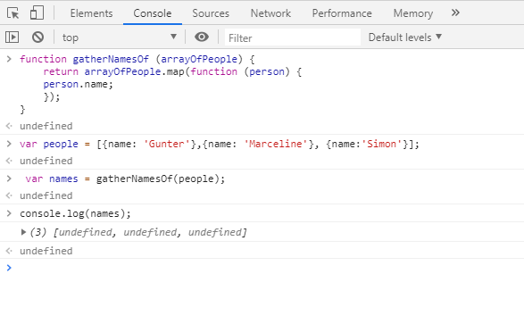

What You'll Learn
Introduction
ဒီတစ်ခါမှာတော့ကျွန်တော်တို့ကြားဖူးပြီးသား material တွေဖြစ်တဲ့ javaScript objects, node , mpm စတာတွေပဲဖြစ်ပါတယ်။ကျွန်တော်တို့လေ့လာသွားရမှာကတော့ Behaviour Driven Development BDD လို့ခေါ်တဲ့နည်းလမ်းကို JavaScript တွေရေးဖို့အတွက်အသုံးပြုပြသွားမှာဖြစ်ပါတယ်။BDD ထဲမှာကျွန်တော်တို့ special functions တွေကိုရေးနိုင်ပါတယ်။အဲ့တာကို tests လို့ခေါ်ပြီးတော့ ကျွန်တော်တို့ application တွေရဲ့အမှန်တကယ် code တွေကိုမရေးခင်မှာစစ်ဆေးရတာပဲဖြစ်ပါတယ်။အဲ့ဒီ tests တွေက code တွေကဘယ်လိုအလုပ်လုပ်သင့်တယ်ဆိုတာကိုဖော်ပြပေးတာပဲဖြစ်ပါတယ်။အခြားနည်းလမ်းနဲ့ပြောရမယ်ဆိုရင်တော့ test တွေကျွန်တော်တို့ application တွေကိုသင့်လျှော်တဲ့ အပြုအမူတွေနဲ့ဖော်ပြပေးတာပဲဖြစ်ပါတယ်။အဲ့ဒီ test တွေကရေးပြီးသားရှိနေရင်လည်းပဲကျွန်တော်တို့ရေးချင်တဲ့အခါမှာနားလည်အောင်ကူညီပေးပါလိမ့်မယ်။တစ်ခါတစ်ရံအလုပ်လုပ်နေစဉ်အတောအတွင်းမှာတစ်ခုခုကမတော်တဆ broken ဖြစ်သွားခဲ့မယ်ဆိုရင်တောင် test တွေကကျွန်တော်တို့ကိုပြောပြပါလိမ့်မယ်။အဲ့ဒီအခါမှာတော့ကျွန်တော်တို့က test တွေကို code ရဲ့သေးငယ်တဲ့ unit တစ်ခုကိုကာကွယ်ဖို့ရန်အတွက်တည်ဆောက်ရပါလ်မ့်မယ်။အဲ့လို testing style မျိုးကို unit testing လို့ခေါ်ပါတယ်။Unit testing တွေကသေးငယ်တဲ့ အပေါ်မှာ focus ပြုလုပ်ပြီးတော့ functionality ရဲ့အဓိပာယ်ပြည့်စုံတဲ့ အပိုင်းလေးပဲဖြစ်ပါတယ်။
Proving Our Code Works
Developing လုပ်တဲ့အခါမှာကျွန်တော်တို့က testing things တွေရဲ့ process ထဲမှာသေချာအောင်လုပ်ဆောင်ရပါတယ်။javaScript programmers တွေက console.log statements တွေကိုမကြာခနထည့်ပြီးအသုံးပြုကြပါတယ်။variables တွေ functions တွေကို tracks လုပ်ဖို့အတွက်နဲ့ keyword တွေကဘယ်ကိုရည်ညွှန်းတယ်ဆိုတာတွေ မှန်ကန်တဲ့ order ထဲမှာဘာတွေဖြစ်နေသလဲဆိုတာတွေကို ထုပ်ပေးဖို့အတွက်ပဲဖြစ်ပါတယ်။ ဥပမာပုံထဲမှာကျွန်တော်တို့ရေးပြထားတဲ့ code ကိုကြည့်မယ်ဆိုရင်။code တွေဟာမှန်ကန်ပြီးတော့ error လည်းမရှိပါဘူး။အဲ့တာကိုကျွန်တော်တို့ browser ရဲ့ console tag ထဲမှာ run ကြည့်မယ်ဆိုရင်တော့ အဲ့တာကအလုပ်လုပ်တယ်လို့ကျွန်တော်တို့သက်သေပြနိုင်မှာမဟုတ်ပါဘူး။အဲ့တာက valid JavaScript ဖြစ်တယ်လို့ပဲကျွန်တော်တို့သိနိုင်မှာဖြစ်ပါတယ်။arrayOfPeople ကကျွန်တော်တို့ရဲ့ function ထဲကိုဖြတ်သွားမှာဖြစ်ပါတယ်။return ပြန်နိုင်ဖို့အတွက်ကျွန်တော်တို့က name တွေကိုထည့်သတ်မှတ်ပြီးခေါ်တဲ့အခါမှာလဲအလုပ်လုပ်တယ်ဆိုတာကိုကျွန်တော်တို့သက်သေမပြနိုင်ပါဘူူး။ဘာ့ကြောင့်လဲဆိုတော့ console ထဲမှာ names တွေရဲ့value တွေကို return ပြန်မပေးလို့ပဲဖြစ်ပါတယ်။ Manual Testing တွေမှာဆိုရင်ပြသနာအချို့ရှိပါတယ်။ကျွန်တော်တို့ program ထဲမှာရှိတဲ့ code တွေကို ထိရောက်စွာရေးဖို့ရန်ခက်ခဲ့ပါတယ်။ဘယ်နေရာမှာပဲဖြစ်ဖြစ်ကျွန်တော်တို့ code တွေကို publish မလုပ်ခင်မှာtesting ပြုလုပ်ဖို့အတွက် remove ပြုလုပ်ခဲ့တဲ့အရာတွေကိုမှတ်မိနေဖို့လည်းလိုအပ်ပါတယ်။တစ်ချို့အရာတွေကကျွန်တော်တို့ application ထဲမှာအမှန်တကယ်အလုပ်မလုပ်ပဲနဲ့ကျန်ရှိနြေ့ပီးတော့ အဲ့တာတွေကိုဖယ်ရှားဖို့ကျွန်တော်တို့ကမေ့နေခဲ့မယ်ဆိုရင် break ဖြစ်စေပြီးကျွန်တော်တို့ကိုပိုပြီးခေါင်းကိုက်စေပါလိမ့်မယ်။နောက်ပြီးကျွန်တော်တို့တွေရေးခဲ့တဲ့ console.log တွေကလည်းဘာကိုဆိုလိုသလဲဆိုတာကိုကျွန်တော်တို့မှတ်မိနေဖို့လိုအပ်ပါတယ်။ အရေးအကြီးဆုံးကတော့ အဲ့တာတွေကအရေးအကြီးဆုံး temporary fixes ဖြစ်ပါတယ်။ပြီးတော့ ကျွန်တော်တို့ code တွေကိုပိုပြီးလွယ်ကူပြီးမြောက်သွားစေမှာလည်းမဟုတ်ပါဘူး။guess တွေ check development တွေအတွက်အဲ့ဒီ method တွေကအမြဲတမ်းလိုအပ်နေမှာပဲဖြစ်ပါတယ်။ 
Running Your First Automated Test
ကျွန်တော်တို့ application တွေထဲမှာရှိတဲ့ code တွေရဲ့unit တစ်ခုခြင်းစီအတွက် automated test တွေကိုရေးဖို့ရန်အတွက် Mocha လို့ခေါ်တဲ့ tool တစ်ခုကိုကျွန်တော်တို့အသုံးပြုမှာပဲဖြစ်ပါတယ်။site လို့ခေါ်တဲ့ test functions တွေပေါင်းစုထားတာကိုလည်းကျွန်တော်တို့တည်ဆောက်ဖို့ရန်လိုအပ်ပါတယ်။ Mocha က testing frameworks တွေအားလုံးနဲ့တူညီပါတယ်။ကျွန်တော်တို့လိုအပ်တဲ့အချိန်မှာအဲ့တာတွေကိုယူပြီး run နိုင်ပါတယ်။အဲ့တာကြောင့် ကျွန်တော်တို့ code တွေနဲ့အလုပ်လုပ်တဲ့အခါမှာ confidence တွေပိုပြီးတိုးလားပါတယ်။ပြီးတော့အဲ့တာတွေက problems တွေကို ပိုပြီးနားလည်လွယ်အောင်ပြုလုပ်ပေးပါလိမ့်မယ်။Developer တွေကတော့တစ်ခ့တစ်ရံမှာနည်းလမ်းတွေအမျိုးမျိုးနဲ့ test suite တွေကိုအသုံးပြုကြပါတယ်။တစ်ချို့က test တစ်ခုလုံးရဲ့ collection ကြီးတစ်ခုလုံးကိုရည်ညွှန်းဖို့ရန်အတွက်အသုံးပြုကြပါတယ်။တစ်ခါတစ်ရံမှာတော့အဲ့တာတွေက test တွေရဲ့သီးခြား selection တွေနဲ့သူတို့က ဆက်စပ်နေပါတယ်။Mocha ကို team ကdesigned ပြုလုပ်ခဲ့ပြီးrelated tests တွေရဲ့ specific groupကအကုန်လုံးကိုဘယ်လိုအသုံးပြုတယ်ဆိုတာကို ဖော်ပြဖို့ရန်အတွက် suites ကိုအသုံးပြုခဲ့ပါတယ်။ဥပမာထဲမှာတော့ကျွန်တော်တို့ကသေးငယ်တဲ့ function အတွက် test suite တစ်ခုကိုရေးပြထားပါတယ်။ ပထမကျွန်တော်တို့က mocha ကို install ပြလုပ်ခဲ့ဖို့လိုအပ်ပါတယ်။အဲ့ဒိနောက်မှာတော့ ကျွန်တော်တို့ရဲ့ test ကို setup လုပ်ရပါမယ်။ ကျွန်တော်တို့တွေ automate testing တွေပြုလုပ်တဲ့အခါမှာ informative way ထဲမှာ result တွေကိုလွယ်ကူအောင်ဖော်ပြနိုင်ပါတယ်။နောက်ထပ်တစ်ခုကတော့ test file တွေက real code တွေကနေခွဲခြားပြီးရေးထားတာပဲဖြစ်ပါတယ်။out put တွေကလည်း ဖတ်ဖို့ရန်လွယ်ကူပြီး နားလည်စေပါတယ်။
Different Types of Testing
automate Test တွေထဲကမှကျွန်တော်တို့ လေ့လာသွားမှာကတော့ Unit tests ပဲဖြစ်ပါတယ်။ကျွန်တော်တို့တွေက code တွေအတွက် unit test တွေကိုရေးနိုင်ပြီးအဲ့တာတွေကရှင်းလင်းပြီးတိကျမှုရှိပါတယ်။unit test ပြုလုပ်တယ်ဆိုတာ basketball သင်ကြားတာနဲ့ပုံစံတူပါတယ်။basket ball ကောင်းကောင်းကစားတက်တဲ့သူကများစွာသောကြွမ်းကျင်မှုတွေရှိပြီးတော့ shooting, passing တွေ running တွေနဲ့ dribbling စတဲ့ကြွမ်းကျင်မှုတွေရှိပါတယ်။Basket ball players တွေကအမှန်တကယ်ကစားတဲ့အခါမှာ သူတို့ရဲ့တိကျတဲ့ထိုးဖောက်မှု skills တွေတစ်ခုစီကိုအသုံးပြုပြီးကစားကြပါတယ်။အဲ့လိုတွေကစားနိုင်ဖို့အတွက်သူတို့တွေကကြိုတင်ပြီးတော့ အဲ့ဒီ skill တွေကိုလေ့ကျင့်ထားရတာပဲဖြစ်ပါတယ်။အဲ့လိုပါပဲကျွန်တော်တို့ unit testing မှာလည်း development process တွေပြုလုပ်နေစဉ်အတွင်းမှာထိုးဖောက်ပြီးတော့ test ပြုလုပ်ခဲ့ရမှာပဲဖြစ်ပါတယ်။နောက်ပြီး basketball players တွေကအသင်းအဖွဲ့နဲ့ကစားတဲ့အခါမှာလည်း dribble, pass တွေ shoot တွေကောင်းမွန်စွာအတူတကွလုပ်ဆောင်ကြရမှာပဲဖြစ်ပါတယ်။ကျွန်တော်တို့ Programming တွေမှာလည်းအဲ့လို့ testing မျိုးကို Intregration Testing လို့ခေါ်ပါတယ်။အဲ့တာကိုတော့ကျွန်တော်တို့ code အသစ်တွေကို တည်ရှိပြီးသား code တွေနဲ့အတူတကွအလုပ်လုပ်တဲ့အခါမှာ test ပြုလုပ်တာပဲဖြစ်ပါတယ်။ လက်တွေ့ပြုလုပ်တာတွေက practie ပြုလုပ်တာတွေနဲ့အများကြီးကွာခြားမှုတွေရှိပါတယ်။ကျွန်တော်တို့ဥပမာပြောထားတဲ့ backetball ကစားသလိုပဲအခြားမတူညီတဲ့ teams တွေ crowds တွေမတူညီတဲ့ strategies တွေနဲ့ကစားရမှာပဲဖြစ်ပါတယ်။အဲ့တာကြောင့်ကျွန်တော်တို့မှာ team experience တွေရယ်ကောင်းမွန်တဲ့ team ရယ်ရှိဖို့လိုအပ်ပါတယ်။အဲ့ဒီလိုပါပဲ software တွေမှာအဲ့ဒီလို testing မျိုးကို End-to-End testing လို့ခေါ်ပါတယ်။အဲ့တာကြောင့်ကျွန်တော်တို့က application တွေမှာရှိတဲ့ user stories တွေကိုအစကနေအဆုံးအထိပြီးအောင် test ပြုလုပ်ကြရပါမယ်။နောက်ပြီးကျွန်တော်တို့ Program ကအသုံးပြုဖို့ရန်အတွက်အဆင်သင့်ဖြစ်နေရမှာပဲဖြစ်ပါတယ်။နောက်ပြီးကျွန်တောတို့က unit testing တွေintegration tests တွေကိုအသုံးပြုပြီးဂရုစိုက်ပြီးတော့ testing တွေပြုလုပ်ပေးရမှာပဲဖြစ်ပါတယ်။
Behavior Driven Development
ကျွန်တေ်ာတို့ unit testing တွေအကြောင်းကိုတော်တော်များများလေလာခဲ့ပြီးဖြစ်ပါတယ်။ကျွန်တော်တို့ unit testing တွေအတွက်ဆက်ပြီးမရေးခင်မှာ Behaviour Driven Development လို့ခေါ်တဲ့ BDD အကြောင်းကိုပြောပြသွားမှာဖြစ်ပါတယ်။BDD ဆိုတာကတော့ testing type တစ်ခုဖြစ်ပြီး unit testing တွေ integration testing တွေလိုမျိုးပဲဖြစ်ပါတယ်။အဲ့တာက software တွေတည်ဆောက်ဖို့အတွက် approach ပြုလုပ်ပေးတာလည်းဖြစ်ပါတယ်။Behaviour drivern development တွေက program တွေကိုမရေးခင်မှာ plan တွေကိုတည်ဆောက်ခဲ့တာပဲဖြစ်ပါတယ်။programmer တွေအများစုကတော့ BDD တွေကိုအသုံးပြုပြီးတော့ test file တွေကိုပထမရေးပြီးမှ code တွေကိုဒုတိယရေးပြီးတော့အုလပ်လုပ်ပါတယ်။ပထမတော့ကျွန်တော်တို့ရဲ့ progarm မှာ code တွေက error တွေတက်နေပါလိမ့်မယ်။ errors တွေကအနီရောင်တွေနဲ့ဖော်ပြနေပါလိမ့်မယ်။အဲ့ဒီနောက်တစ်ဆင့်ခြင်းစီဖြေ၇ှင်းပြီး test ပြုလုပ်လိုက်တဲ့အခါမှာတော့ error တွေက green check marks တွေနဲ့အစားထိုးသွားမှာပဲဖြစ်ပါတယ်။အဲ့ဒီလိုဖြေရှင်းနေစဉ်အတွင်းမှာပဲ နောက်ထပ် error တွေထပ်ပြီးတိုးလာနိုင်ပါတယ်။အဲ့တာတွေကိုပါထပ်ပြီး test ပြုလုပ်ခဲ့ရမှာပဲဖြစ်ပါတယ်။အဲ့လိုပြုလုပ်ပြီးတဲ့အခါမှာတော့ကျွန်တော်တို့ code တွေကို ဖတ်တဲ့အခါမှာအဆင်ပြေစေ၇န်အတွက်ပြုပြင်ပြီးရေးခဲ့ရမှာပဲဖြစ်ပါတယ်။အဲ့ဒီ process ကျွန်တော်တို့ code တွေကိုတိုးတက်လာစေပြီးတော့ refactoring လို့ခေါ်ပါတယ်။နောက်ထပ်အဲ့ဒီ process ထဲမှာအရေးကြီးတဲ့တစ်ချက်ကတော့ကျွန်တော်တို့ test တွေရှိတဲ့နေရာမှာဆိုရင် ကျွန်တော်တို့ code breaks တွေဘယ်လိုပြောင်းလဲသွားတယ်ဆိုတာကိုချက်ခြင်းသိန်ုင်တာဖြစ်ပြီး falling test တွေကို read error အနေနဲ့ဖော်ပြထားတာပဲဖြစ်ပါတယ်။အဲ့ဒီ development Cycle ကို Red Green Refactor လို့လည်းခေါ်ပါတယ်။
Red, Green, Refactor
နောက်ထပ် BDD နဲ့ red green refactor cycle တွေကဘယ်လိုကူညီပေးသလဲဆိုတာတွေကိုလေ့လာသွားမှာပဲဖြစ်ပါတယ်။ဥပမာကျွန်တော်တို့မှာ internet ပေါ်မှာရှိတဲ့မတူညီတဲ့ sites တွေကနေ movies titles တွေကိုဆွဲယူတဲ့ application တစ်ခုရှိတယ်ဆိုပါဆို့။အဲ့ဒီ information တွေကwebsites တွေအများကြီးကနေလာတာတွေဖြစ်ြ့ပီးတော့ကျွန်တော်တို့လိုချင်တဲ့ style နဲ့လာတဲ့ title တွေရရမယ်လို့ကြိမ်းသေမပြောနိုင်ပါဘူး။အဲ့တာကြောင့်ကျွန်တော်တို့တွေ BDD principle တွေကိုအသုံးပြုပြီးတော့အဲ့ဒီ title casing တွေကို handle ပြုလုပ်နိုင်ဖို့အတွက် function တွေရေးဖို့ကြိုးစားရပါမယ်။ပထမကျွန်တော်တို့ cahi လို့ခေါ်တဲ့ testing tool တစ်ခုကို install ပြုလုပ်ဖို့လိုအပ်ပါတယ်။အဲ့တာက expectation library တစ်ခုပဲဖြစ်ပါတယ်။နောက်ပြီး expection တွေမဖြစ်နိုင်တဲ့အခါမှာတက်လာတဲ့ error တွေကို thrown ပြုလုပ်တဲ့ special function တွေလည်းပါဝင်ပါတယ်။ကျွန်တော်တို့စပြီး function အသေးတစ်ခုအတွက် BDD outlines ကိုရေးဖို့ရန် chai function ကိုအသုံးပြုနိုင်ပါတယ်။chai ကို install ပြုလုပ်ဖို့အတွက် terminal ထဲမှာ npm install chai ဆိုပြီးရေး run ပေးရပါမယ်။


Can Request Example project File